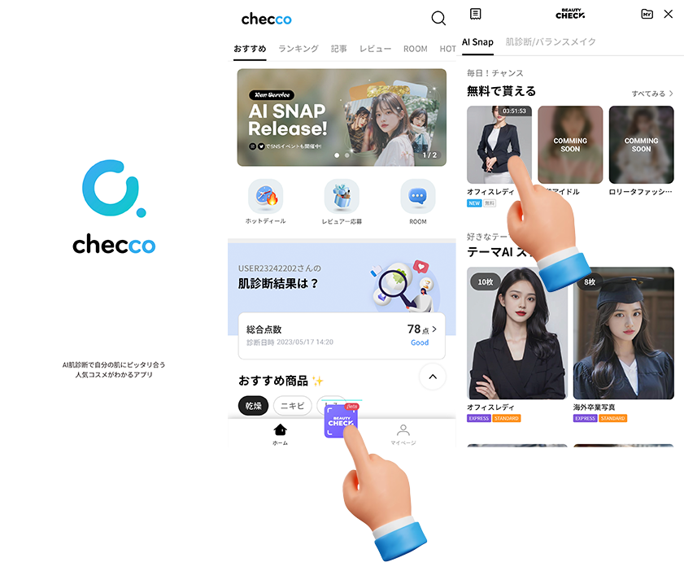
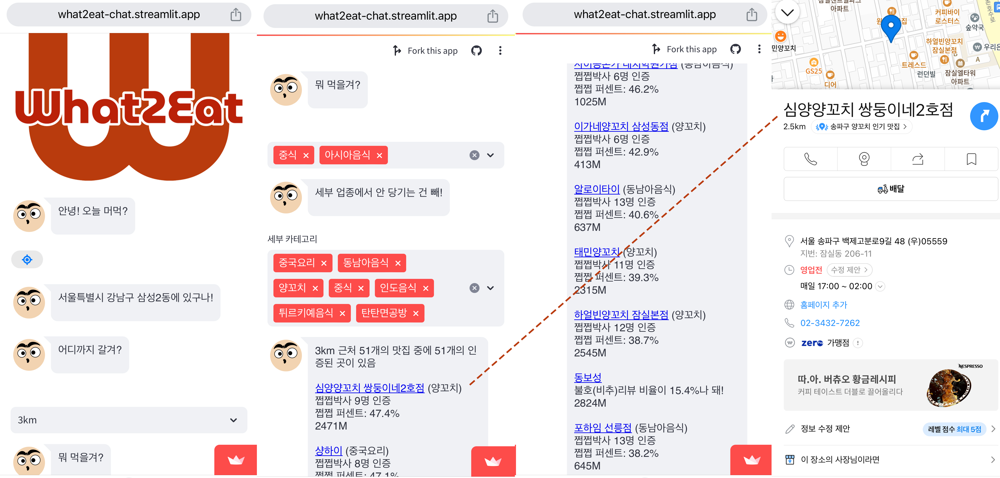
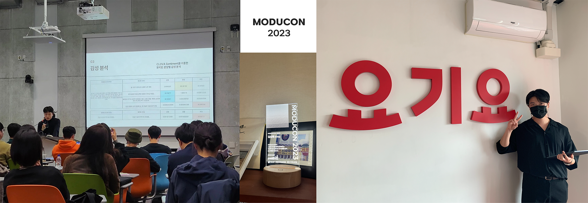

Github
목차
🛠️ 기술스택
🎖️ 수상
🗣️ 발표 및 기타 활동
Work Experience.
🏢 ELINHA Co., Ltd
2022.10.31 ~ 현재
checco라는 플랫폼을 통해 일본에서 한국 화장품에 대한 정보를 제공하며, AI 서비스 체험, 커뮤니티, 특가 판매 등 다양한 서비스를 운영하고 있습니다. 일본 애플 앱스토어의 한국 화장품 카테고리에서 1위를 한 바가 있습니다.
🗂️ 주요 프로젝
1. AI Snap
기간: 2023.07.26. ~ 2023.12.12

유저의 셀카 이미지로 다양한 콘셉트의 이미지 사진을 제작해 주는 AI 서비스
기여한 부분
- SNOW의 AI 프로필, Meitu, Carat 등 경쟁 AI 이미지 생성 서비스 리뷰 후 자사만의 차별 서비스 기획
- 정면 여부 판단 기능, 얼굴 쪽 머리카락 지우는 기능, 눈가 및 팔자주름 지우는 기능 개발
- Stable Diffusion을 활용한 테마에 따른 이미지 생성
- 사용자 얼굴 변경을 위한 딥페이크 기술에 중점을 둔 AI Snap 기능의 설계 및 구현
- Docker를 활용하여 배포 시스템 구축
사용한 기술
- Python
- OpenCV
- TensorFlow
- PyTorch
- Stable Diffusion
- MediaPipe, Google
- Docker
- NAVER CLOUD PLATFORM
성과
- Phase2 업데이트에 맞춰 일본 대형 이커머스와 크리스마스 콜라보 프로젝트 진행
- checco 플랫폼 가입자 수 AI Snap 기능 출시 후 300% 증가
이용 가이드
checco AppStore

2. BalanceMakeUp
기간: 2023.03.13.~2023.07.18.

유저의 얼굴 분석을 통해 ‘나에게 맞는 미‘, ‘내 얼굴에 맞는 메이크업’을 제시해주는 서비스
기여한 부분
- 기획서 작성부터 PoC 진행 등 모든 회의에 참석하여 서비스 개발을 주도
- 얼굴 분석 모델 개발
- 얼굴형 분류 기능
- 얼굴 비율 분석 기능
- 메이크업 전문가와 협업을 통해 메이크업 가이드 문구 정리
- Docker Compose를 이용하여 Nginx와 FastAPI를 사용하는 병렬 처리 구현
사용한 기술
- Numpy
- TensorFlow
- MediaPipe, Google
- Generative Adversarial Networks (GANs)
- FastAPI
- Ngnix
- Docker
- Docker Compose
- NAVER CLOUD PLATFORM
이용 가이드
checco AppStore
3. Catch V
기간: 2022.06.20.~2022.12.02.
디지털성범죄피해자를 지원하기 위해, 유포 범죄에 악용된 영상의 URL 주소를 찾아주는 오픈소스 프로젝트소개영상
기여한 부분
- 프로젝트 리더 및 기획
- 프로젝트 아키텍처 설계
- 유포 우려가 있는 사이트 URL 수집을 위한 웹크롤러 개발
- YOLO와 FaceNet를 활용한 닮은 얼굴 디텍팅 모델 개발
사용한 기술
- Flask
- Pytorch
- TensorFlow
- OpenCV
- YOLO(Object Detection)
- FaceNet
- AmazonRDS
성과
- 디지털 성범죄 피해자를 지원하는 공개 소프트웨어 개발
- 2022 SW개발자 대회에서 동상 수상
이용 가이드
CatchV Github
📚 Other Experience.
사이드 프로젝트
카카오맵 리뷰에서 유의미한 평가만 모은 맛집 추천 서비스
기여한 부분
일에 치여 기운이 없을 때마다 꿈의 프로젝트를 생각하며 한 단계씩 업그레이드 해나가는 저만의 프로젝트입니다.
로고디자인, 스크래핑, 데이터구조 설계, 웹 서비스 개발 등 혼자 하였습니다.
지인 개발자끼리 모여 하루 해커톤을 열어, 데이터 구조 개편 작업을 하였습니다. 덕분에 읽기 속도가 빨라 졌습니다.

만족한 유저와 불만족한 유저 수를 계산하여 노출하기
- 유의미한 호(好) 리뷰 찾는 방법
카카오맵에서 스크래핑 해온 음식점 리뷰 데이터에서 개인의 평균 평점이 3.8 이상인 유저가 해당 음식점에 4점 이상의 별점을 남겼다면 그 음식점에 만족을 했다고 보고 유의미한 호(好) 리뷰어라고 판단했습니다.
- 쩝쩝박사 - 유의미한 호(好) 리뷰어 인원
- 쩝쩝퍼센트 - (유의미한 호(好) 리뷰어 수/ 전체 리뷰어 수) * 100
화면 노출 조건
쩝쩝박사 인원 수가 5명이 넘는 음식점 중에서 쩝쩝 퍼센트가 높은 순으로 목록을 제공됩니다.
- 유의미한 비호(非好) 리뷰 찾는 방법
개인의 평균 평점이 3.5 이상인 유저가 해당 음식점에 1.5점 이하로 별점을 남겼다면 그 음식점에 불만족을 했다고 보고 유의미한 비호(非好) 리뷰어라고 판단했습니다.
- 채팅 형식의 UX
처음엔 지도 기반으로 개발 하였습니다. Streamlit으로 프런트를 짜다보니, 자유도가 많이 떨어졌습니다. 지도에 갖혀 벗어나지 못 하는 등 유저들이 불편하다는 피드백이 많았습니다.
그러다가 카카오톡에서 친구에게 맛집 리스트를 보내주듯 구현하면 어떨까 아이디어가 떠올라. 맛잘알 친구가 알려주는 맛집 리스트 개념으로 UX를 잡았습니다.

사용한 기술
- Streamlit
- Pandas
- Selenium
이용가이드
What2Eat_Chat(채팅 기반)
What2Eat(지도 기반)
What2Eat 소스코드
2. NoCountryForOldMan
세대 간 인식의 격차가 심화되는 오늘날의 추세 속에, 영화 <인턴>의 리뷰를 통해 주니어 세대가 바라보는 이상적인 시니어 세대의 모습을 알아보는 것을 목적으로 하는 모두랩 논문 연구 프로젝트
사용한 기술
- Pandas
- Selenium
- BeautifulSoup4
- scikit-learn
- LangChain
- Mistral-7B
- Sentence-transformers model
기여한 부분
- CGV, 왓챠, 다음영화에서 리뷰 스크래핑
- 맞춤법검사, 문장분리, 감성분석, 군집화 전반적인 코드 작업
- LLM을 활용한 군집별 요약 작업
- 연구 방법, 결론(2_2) 부분 논문 작성
성과
- 2023 모두콘 연사 < LLM을 이용한 색다른 Topic 모델링>
3. naverTrans
네이버 검색창의 번역 기능을 사용하는 파이썬 패키지
기여한 부분
- 네이버 검색창 Ajax API를 활용한 패키지 코드 작업
- Pypi 업로드
이용가이드
from navertrans import navertrans
src_txt = 'Please give a round of applause to NAVER.'
result = navertrans.translate(src_txt, src_lan="en", tar_lan= "ko")
print(result) # Output: '네이버에게 박수 부탁드립니다.'
🛠️ 기술스택
🎖️ 수상
🗣️ 발표 및 기타 활동
- 요기요 ‘취향식탁’ 마케팅팀 기술 PT
- 네이버 부스트코스 코딩코치
- 코칭스터디 Data Science Projects 2024
- 코칭스터디 12기 Python Everybody
- 코칭스터디 10기 Beyond AI Basic
- 모두의 연구소 “노인을 위한 나라는 없다” 랩 활동
- 모두콘2023 연사 < LLM을 이용한 색다른 Topic 모델링>

🎓 교육
- 2011 포항 대동고등학교
- 2015 용인대학교 영화영상학과
- 2022 (주)엔코아 부트캠프 PLAYDATA AI 과정
- 2023 방송통신대학교 통계 데이터학과